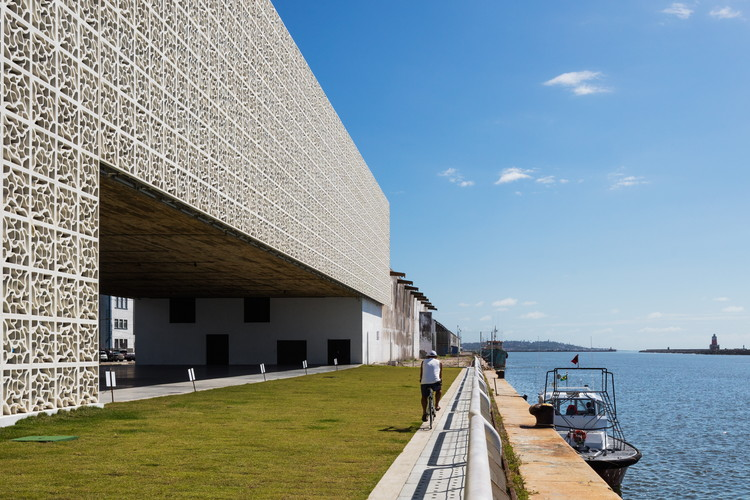
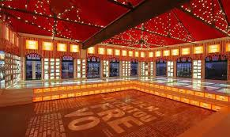

Cais do Sertão
O Cais do Sertão é um museu interativo que celebra a cultura sertaneja e a vida de Luiz Gonzaga, um dos maiores músicos do Brasil. O museu combina tecnologia moderna com a rica tradição nordestina.
Paço do Frevo
O Paço do Frevo é um espaço cultural dedicado à preservação, pesquisa, lazer e formação nas tradições do frevo, ritmo musical e dança típicos do Recife. O Paço oferece exposições, oficinas e apresentações.
Voltar ao Marco Zero
Clique aqui para voltar à página do Marco Zero.